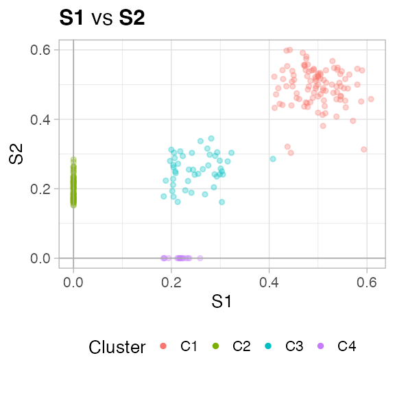
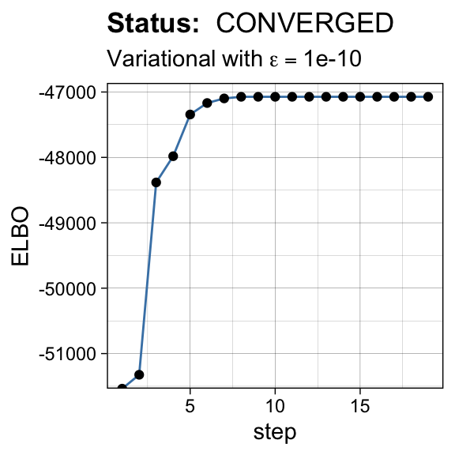
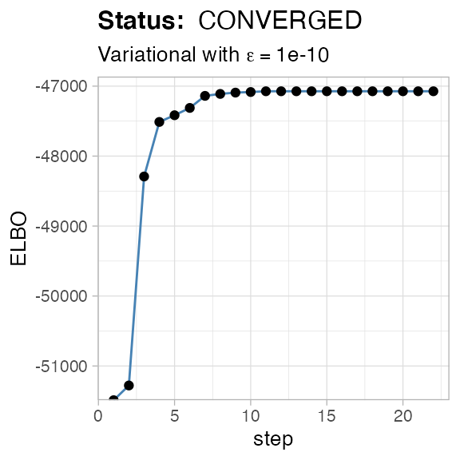
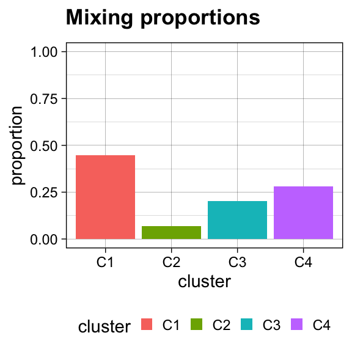
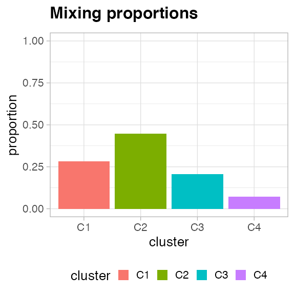

Install the package from github, use devtools to install directly from GitHub and install required packages as well. You might need to install explicitly these R packages
until we develop an automatic installer for VIBER. Once installed just load the package
To run the fit you need 2 tibbles (or matrices), with equal dimensions and matched column names. One tibble contains the counts of the successful Bernoulli trials, the other contains the count of all the attempted trials.
In the package we provide mvbmm_example, a dataset which shows the input format.
The format is (S1 and S2 are the dimensions)
## # A tibble: 231 x 2
## S1 S2
## <dbl> <dbl>
## 1 44 39
## 2 38 57
## 3 45 54
## 4 56 56
## 5 54 56
## 6 60 44
## 7 53 46
## 8 53 55
## 9 56 53
## 10 53 60
## # … with 221 more rowsYou can fit the model with the variational_fit function, which is quite well documented
You have control over several parameters. Concerning the mixture type you can set the following
K, the maximum number of clusters returnedalpha_0, the concentration parameter of the Dirichlet mixture.a_0 and b_0, the prior Beta hyperparameter for each Binomial componentConcerning the variational optimization you can set the following
max_iter, the maximum number of fit iterationsepsilon_conv, the epsilon to measure convergence as ELBO absolute differencesamples, the number of fits computed.The fitting engine makes use of the easypar package to run in parallel the required number of fits. The default is multi-core implementation that uses 80% of the available cores; you can disable parallel runs and execute sequential turning off easypar, as explained in its Wiki.
We run the fit with default parameters, the output model is print to screen.
## [ VIBER - variational fit ]
##
## INPUT
## Points N = 231
## Clusters K = 10 (max)
##
## Dirichlet alpha = 1e-06 (conc.)
## Beta a0 = 1; b0 =1 (shape)
##
## Beta (posterior) prior
## Optimize epsilon = 1e-10; steps =5000; r = 10
##
##
##
## BEST FIT
##
## [ VIBER - Variational inference for Binomial mixtures ]
##
## Points N = 231
## Dimensions W = 2
## Fit CONVERGED (19 steps; eps. 1e-10) with Variational
##
## Binomial parameters (2 digits rounded)
## # A tibble: 2 x 10
## C4 C8 C5 C10 C1 C2 C3 C6 C7 C9
## <dbl> <dbl> <dbl> <dbl> <dbl> <dbl> <dbl> <dbl> <dbl> <dbl>
## 1 0.5 0 0.25 0.22 0.5 0.5 0.5 0.5 0.5 0.5
## 2 0.49 0.2 0.25 0 0.5 0.5 0.5 0.5 0.5 0.5
##
## Proportions (ordered)
## # A tibble: 10 x 2
## entry value
## <chr> <dbl>
## 1 C4 0.447
## 2 C8 0.281
## 3 C5 0.202
## 4 C10 0.0693
## 5 C1 0.00000000433
## 6 C2 0.00000000433
## 7 C3 0.00000000433
## 8 C6 0.00000000433
## 9 C7 0.00000000433
## 10 C9 0.00000000433
##
##
## COMPLETED: 0.04 mins, with status CONVERGEDBecause the model is semi-parametric, it will attempt to use at most K Binomial clusters. However, most of those clusters might be not interesting and you might want to filter them.
VIBER implements 2 possible filters which are available in function choose_clusters.
Adter filtering, output clusters will be renamed by size (C1 will be larger etc.), and the latent variables and hard clustering assignments will be updated accordingly.
Here we require only the minimum cluster size to be 2% of the total number of points.
##
## =-=-=-=-=-=-=-=-=-=-=-=-=-=-=-=-=-=-=-=-=-=-=-=-
## Selecting Binomial clusters (F1,2-heuristic).
## =-=-=-=-=-=-=-=-=-=-=-=-=-=-=-=-=-=-=-=-=-=-=-=-
##
## F1. Cluster size 0.02
## F2. Num. of dimensions 0
## F2. Min. Binomial peak 0
## # A tibble: 10 x 7
## cluster pi Above_cut F1 F2 accepted new.labels
## <chr> <dbl> <dbl> <lgl> <lgl> <lgl> <chr>
## 1 C4 0.447 2 TRUE TRUE TRUE C1
## 2 C5 0.202 2 TRUE TRUE TRUE C2
## 3 C8 0.281 2 TRUE TRUE TRUE C3
## 4 C10 0.0693 2 TRUE TRUE TRUE C4
## 5 C1 0.00000000433 2 FALSE TRUE FALSE C5
## 6 C2 0.00000000433 2 FALSE TRUE FALSE C6
## 7 C3 0.00000000433 2 FALSE TRUE FALSE C7
## 8 C6 0.00000000433 2 FALSE TRUE FALSE C8
## 9 C7 0.00000000433 2 FALSE TRUE FALSE C9
## 10 C9 0.00000000433 2 FALSE TRUE FALSE C10The new model has fewer clusters
## [ VIBER - Variational inference for Binomial mixtures ]
##
## Points N = 231
## Dimensions W = 2
## Fit CONVERGED (19 steps; eps. 1e-10) with Variational
##
## Binomial parameters (2 digits rounded)
## # A tibble: 2 x 4
## C1 C3 C2 C4
## <dbl> <dbl> <dbl> <dbl>
## 1 0.5 0 0.25 0.22
## 2 0.49 0.2 0.25 0
##
## Proportions (ordered)
## # A tibble: 4 x 2
## entry value
## <chr> <dbl>
## 1 C1 0.447
## 2 C3 0.281
## 3 C2 0.202
## 4 C4 0.0693You can plot the data - one dimension against the other - with the plot_2D (for instance, trye plot_2D(fit, d1 = 'S1', d2 = 'S2')), or use the S3 function plot(fit) to compute a list of plots for each pair of dimensions in the mixture.
## [[1]]
You can plot the ELBO

You can plot the Binomial peaks, per cluster and per dimension

You can plot the mixing proportions of the mixture

And, finally, you can plot the latent variables of the mixture
